1、水管铺设是隐蔽工程的重中之重，选择放心、耐用的水管在家庭装修中显得尤为重要，而且水管在整个装修中所占费用并不高，选择品牌的水管更有保障。
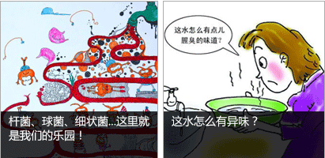
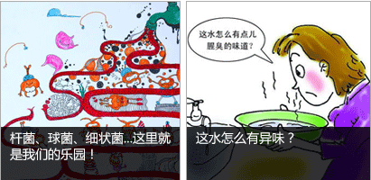
2、大品牌水管在生产过程中对质量有严格要求，从原料到生产再到质检，为您层层把关。
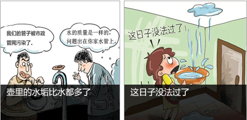
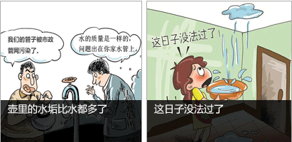
3、选用品牌水管，质量有保障，不会发生漏水现象，邻里纠纷都可以免了。
4、根据国家标准GB/T 18742.2不透光性要求：“管材应不透光”，品牌管材生产厂商会按照国家标准进行生产的，确保水质的健康。
5、品牌管材不仅使用寿命有保障，而且有完善的售后服务，让业主买的放心、用的放心~！
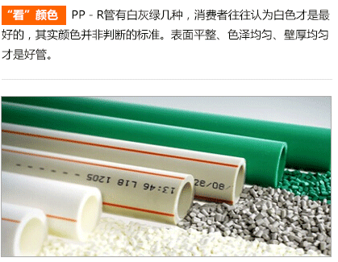
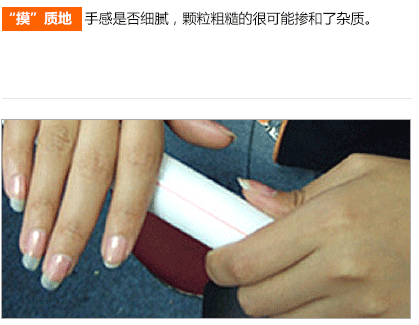
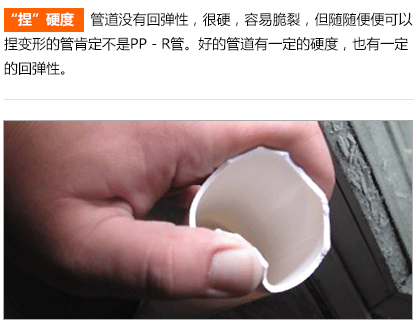
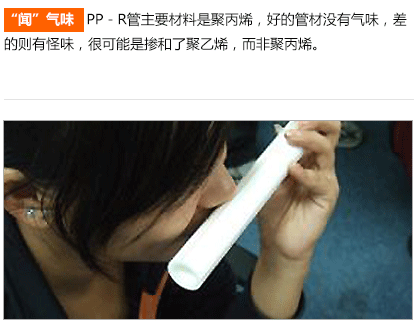
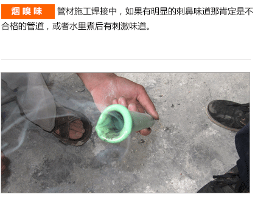
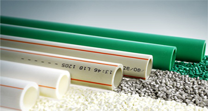
伟星F-PPR管为我公司独家专利产品，通过中间层复合增强，将普通PPR各方面性能大幅升级有效解决了管道变形不美观，高温下爆管漏水等技术难题，是家装水管的高端产品。
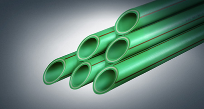
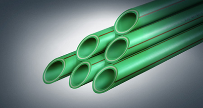
伟星A+管采用世界上最新聚合工艺合成的高性能聚烯烃材料加工而成分水器处分散连接到每个用水点，所以在集分水器的位置需要使用柔软度比较好的管材
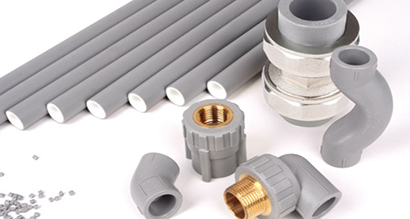
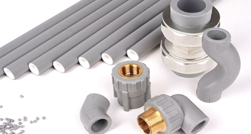
室外用管材需要有防紫外线、防冻裂、有阻氧功能的管材。伟星PP-R塑铝稳态管是金属管材和塑料管材的完美结合，集金属管刚性强，不易变形，塑料管卫生、耐腐蚀、连接可靠等优点于一身。特别适合于明装和高水压用管。
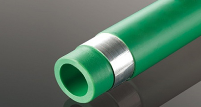
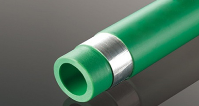
家用供水系统
常用敷设方式 可选择的管道产品
PPR管材|家装用PPR冷热水管 FPPR管|纤维增强聚丙烯管
A+管 PP-R塑铝稳态管
家用中央采暖系统 散热器采暖系统
聚丁烯（PB）管 PB阻氧管 PPR塑铝稳态管 铝塑管|铝塑复合管
地板辐射采暖系统
PB采暖管 PERT管|I型PE-RT地暖管 II型PE-RT地暖管
PB管|PB-R地暖管 阻氧型PE-RT、PB管道
家用同层排水系统
同层排水，是指所有卫生器具的排水横支管不穿越楼板至下层，在本层直接接入主立管，一旦发生需要疏通清理的情况，在本层内就能解决问题的排水方式。
PPR管材|家装用PPR冷热水管 FPPR管|纤维增强聚丙烯管
A+管 PP-R塑铝稳态管
家用中央采暖系统 散热器采暖系统
聚丁烯（PB）管 PB阻氧管 PPR塑铝稳态管 铝塑管|铝塑复合管
地板辐射采暖系统
PB采暖管 PERT管|I型PE-RT地暖管 II型PE-RT地暖管
PB管|PB-R地暖管 阻氧型PE-RT、PB管道
家用同层排水系统
同层排水，是指所有卫生器具的排水横支管不穿越楼板至下层，在本层直接接入主立管，一旦发生需要疏通清理的情况，在本层内就能解决问题的排水方式。